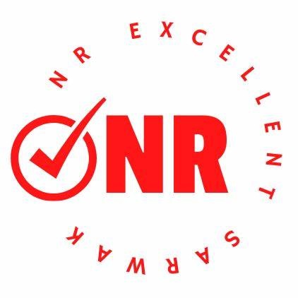

Sacofa Sarawak (2020-Current)

Executive Admin (2 years)
- Successfully planned and executed a major event with zero mishaps, exceeding budget and attendance targets.
- Implemented a new training program for administrative staff
- Developed a comprehensive knowledge base for the executive team
NR Excellent Sarawak (2018-2020)
Position: Operation officer (2 years)
- Create 4,000 marketing posts through AiWassap.
- Successfully prepare 5 customer documents.
- Design 5 posters in a day.
- Deliver customer documents daily.
- Produce 3 marketing videos each day.